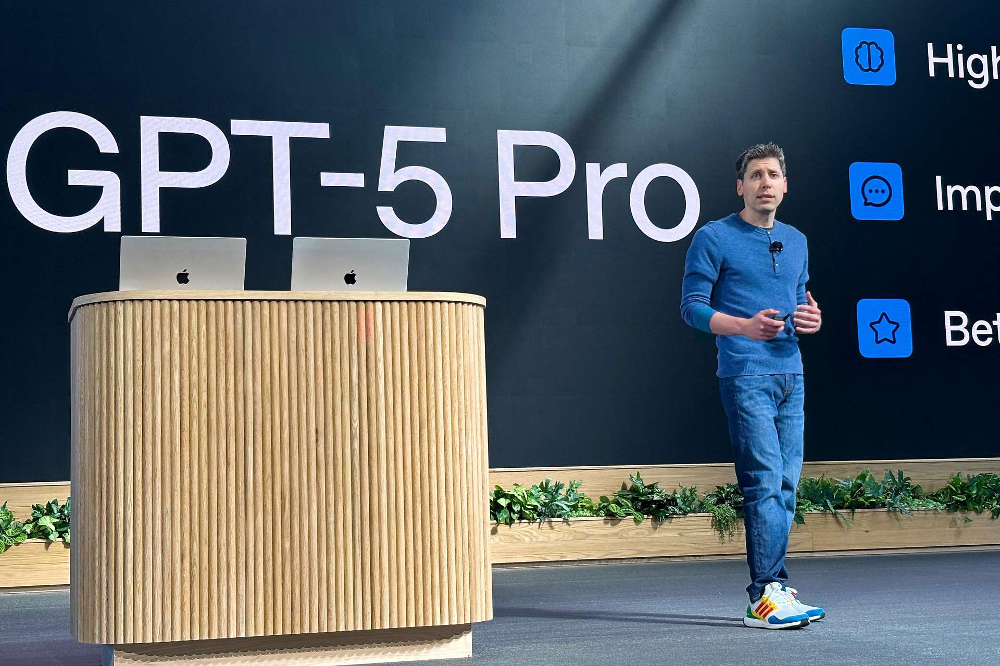

Derzeit sind Anbieter auf der Suche nach neuen, lukrativen Ansätzen.
Ideen dazu überschlagen sich. Für Aufsehen sorgte am Dienstag die
Ankündigung von OpenAI-Chef Sam Altman, „Erotik für verifizierte
Erwachsene“ zu erlauben. Bisher sei der Chatbot aufgrund von
Restriktionen „für viele weniger nützlich oder unterhaltsam“ gewesen,
mit einem dazugehörigen Altersnachweis könne sich das bald ändern.
Details wurden nicht genannt, aber freilich soll das geplante Angebot
ein Anreiz sein, ein Abo abzuschließen – schließlich soll bzw. muss Geld
ins Haus. Denn zwar ist die KI-Technologie zukunftsträchtig, aber
zugleich auch teuer, und das für alle Anbieter: Entwickler wie OpenAI
oder Meta investieren derzeit Hunderte Milliarden Dollar in
Rechenzentren – ohne zu wissen, ob sich das auch rentiert.
Weil allein das Unsummen kostet, rittern die Anbieter derzeit in den
vielversprechendsten Segmenten um Beachtung: einerseits bei
privaten Nutzerinnen und Nutzern, die man mit Angeboten dazu
bringen will, sich finanziell zu verpflichten. Ein weiteres Segment sind
Firmen, die die Technologie über Schnittstellen oder Cloud-Dienste in
ihre eigenen Systeme einbauen.

Doch in den Geschäftsfeldern geht es auch um eine Zusammenarbeit
mit Unternehmen. Dabei sollen etwa Marktplätze für KI-Anwendungen
Anreize für den Kauf spezieller Anwendungen bieten: So können
innerhalb der KI-Plattformen Drittanbieter spezielle Apps oder Dienste
anbieten – gegen Kauf oder Abo. Nicht nur der Anbieter nimmt damit
Geld ein, sondern auch das KI-Unternehmen, das den Marktplatz
„betreibt“.
Auch E-Commerce ist ein Geschäftsfeld, von dem sich Anbieter
„Monetarisierung“ versprechen. Zuletzt hatte OpenAI erklärt, auch zu
einer Verkaufsoberfläche für klassische Waren werden zu wollen,
anstatt über Antworten auf eine solche hinzuleiten. Die
Kaufabwicklung soll in den Chat integriert werden, Zusammenarbeiten
will OpenAI hierbei mit dem Technologiedienstleister Stripe.
Am Mittwoch berichtete die „Financial Times“ („FT“),
dass OpenAI einen Fünfjahresplan erstellt habe:
Geprüft würden „kreative“ Pläne zur Aufnahme neuer
Schulden, die zum Aufbau seiner KI-Infrastruktur
beitragen könnten, etwa neue Partnerschaften und das
Einsammeln von Investorenkapital. Es gehe laut („FT“)
darum, eine Billion Dollar an bereits geplanten
Ausgaben decken zu können.